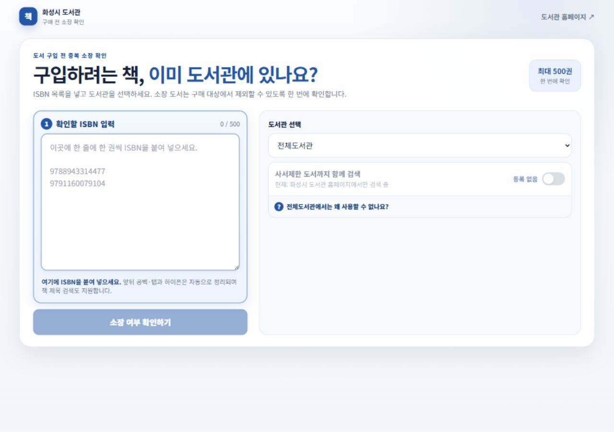

한 줄에 한 권씩 입력합니다. 엑셀에서 그대로 복사해도 공백·탭·하이픈·따옴표가 자동 정리됩니다.
이 사이트의 목적
도서 구매 전에 선택한 화성시 도서관의 소장 여부를 확인하여, 이미 있는 책을 구매 대상에서 제외할 수 있도록 돕습니다.
최대 500권ISBN을 한 번에 확인
기본 사용법

1 2 3전체도서관 또는 확인할 개별 도서관을 선택합니다. 자주 쓰는 도서관은 다음 접속 때 자동 선택됩니다.
버튼을 누르면 입력 순서대로 소장 여부가 표시됩니다. 결과의 책 제목을 누르면 도서관 검색 화면이 열립니다.
검색이 끝나면 순번과 상태가 포함된 엑셀 파일로 저장해 구매 검토 자료로 활용할 수 있습니다.
개별 도서관을 선택한 뒤 도서관정보나루의 최신 월간 장서 파일을 등록하면, 공개 홈페이지에서 보이지 않는 책도 비교할 수 있습니다. 최근 구매 목록도 함께 등록할 수 있습니다.
검색 결과 표시
소장도서관 홈페이지에서 확인
최근 구매등록한 구매 목록에서 확인
사서제한 추정월간 장서 파일에서만 확인
미소장선택한 범위에서 확인되지 않음